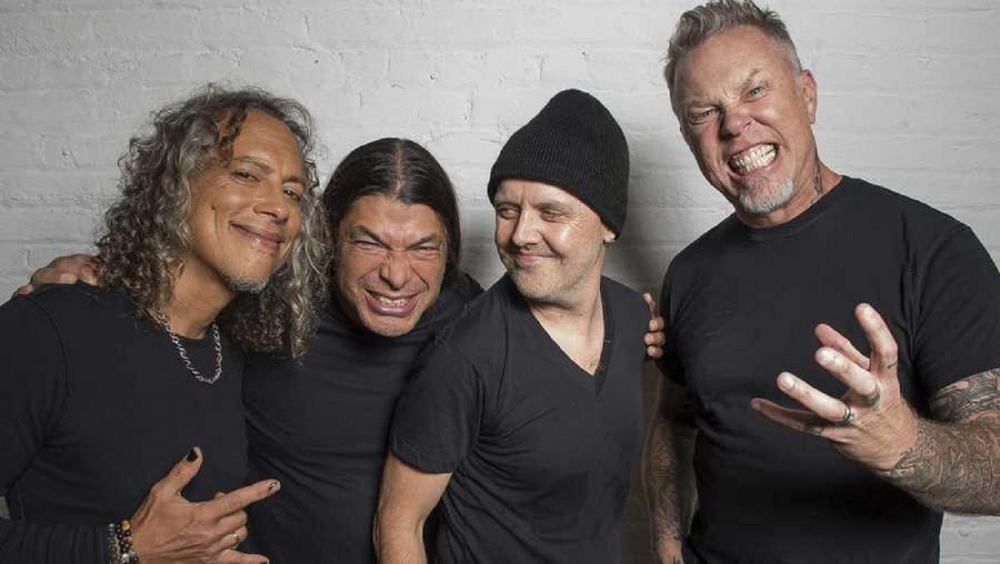

Biographie
Metallica est formé à Los Angeles, en Californie, fin 1981. Tout commence lorsque le batteur Lars Ulrich publie une annonce dans un journal local de Los Angeles — The Recycler — disant : « batteur recherchant d'autres musiciens de metal pour une jam session avec Tygers of Pan Tang, Diamond Head et Iron Maiden »7. Intéressés, les guitaristes James Hetfield et Hugh Tanner, du groupe Leather Charm (en), répondent à cette annonce. Bien qu'il n'ait à cette période formé aucun groupe, Ulrich demande au fondateur du label Metal Blade Records, Brian Slagel, s'il peut enregistrer une chanson à inclure dans la première compilation musicale de la série Metal Massacre. Slagel accepte, et Ulrich recrute Hetfield au chant et à la guitare rythmique7. Le groupe se forme en octobre 1981, cinq mois après la première rencontre d'Ulrich avec Hetfield8. Ulrich demande alors à son ami Ron Quintana (en) de lui trouver un nom définitif pour son groupe, celui-ci s'étant d'abord appelé Dehan, puis Phantom Lord. Quintana, qui cherche à fonder un magazine autour du hard-rock, a deux noms en tête pour son mensuel : « Metal Mania » et « Metallica ». Optant pour le premier nom, il laisse Lars Ulrich prendre le second : Metallica9. Une seconde annonce est ensuite envoyée au journal The Recycler pour le recrutement d'un guitariste. Dave Mustaine y répond ; après avoir acheté du matériel musical hors de prix, Ulrich et Hetfield le recrutent. Début 1982, Metallica enregistre sa première chanson, Hit the Lights, pour la compilation Metal Massacre I. Hetfield y joue de la basse ; Lloyd Grant y est crédité pour les morceaux de guitare solo7. La compilation Metal Massacre I sort le 4 juin 1982 ; les premiers articles de presse listent incorrectement le nom du groupe, le nommant « Mettallica » (avec deux « t »)10. Agacés par cette erreur, les membres du groupe réussissent à créer assez de « bouche-à-oreille » avec leur chanson et leur prestation sur scène le 14 mars 1982, au Radio City d'Anaheim, en compagnie de leur nouveau bassiste Ron McGovney, pour corriger cette erreur de frappe11. Metallica enregistre ensuite sa première démo, Power Metal. Le terme « thrash metal » est utilisé pour décrire leur musique pour la première fois le 23 février 1984 dans un article du magazine Kerrang! par Malcolm Dome (en), alors qu'il faisait allusion à la musique Metal Thrashing Mad d'Anthrax12. Avant cela, Hetfield décrit leur musique comme du « power metal ». Au printemps 1982, Ulrich et Hetfield participent à une soirée à Hollywood dans la boite de nuit le Whisky a Go Go, en compagnie du bassiste Cliff Burton, membre d'un groupe appelé Trauma. Les deux compères sont impressionnés par Burton et sa technique à la pédale wah-wah ; ils lui demandent alors de rejoindre Metallica13. Burton, ayant au début décliné l'offre, accepte finalement en fin d'année, à la condition que le groupe se déplace à El Cerrito dans la région de la baie de San Francisco. La première prestation sur scène de Metallica avec Burton se déroule en mars 1983 au nightclub The Stone ; leur premier enregistrement avec Burton prend pour nom Megaforce (1983)13.
